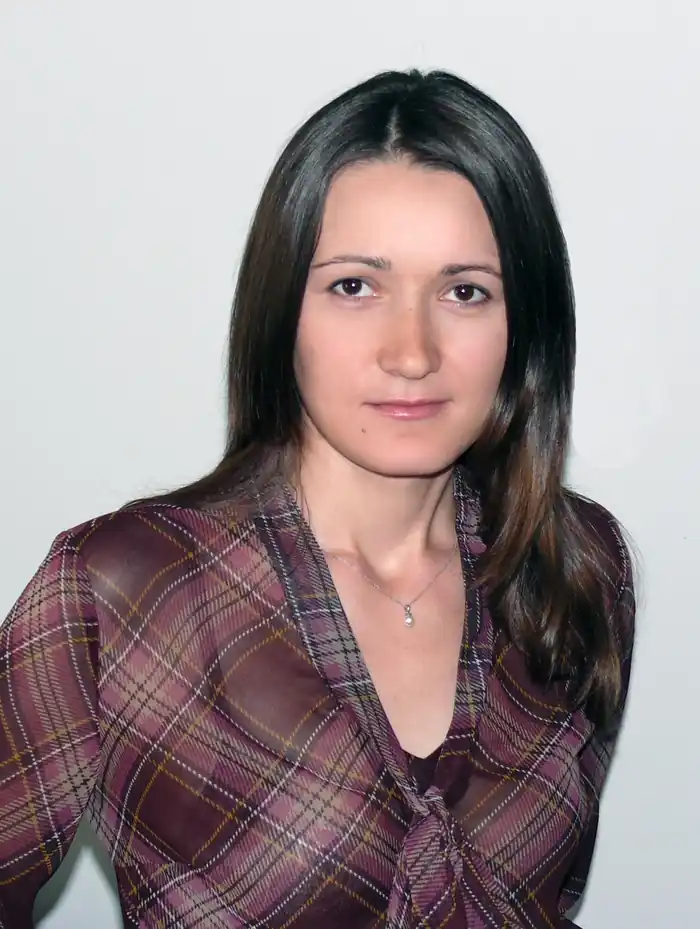

Народилася 1 листопада 1981 року в місті Умань. Вищу юридичну освіту отримала в НУ "Києво-Могилянська Академія". Живе і працює в Києві.
Довший час займалася юриспруденцією і навіть отримувала задоволення від своєї роботи, та одного дня зрозуміла, що залишаючись юристом світ кращим не зробить. Зовсім не тому, що робота юриста неважлива. Це важлива робота, просто по-справжньому гарно та із задоволенням її робити може не кожен.
Не один день і навіть не один місяць пішов на пошук справжнього покликання, ще більше часу знадобилося на навчання. Щоправда, навчання є процесом нескінченним, тому ще більше часу піде на нього у майбутньому. Наразі Олександра займається ілюстрацією та іноді розповідає казкові історії. Як буде далі – побачимо.